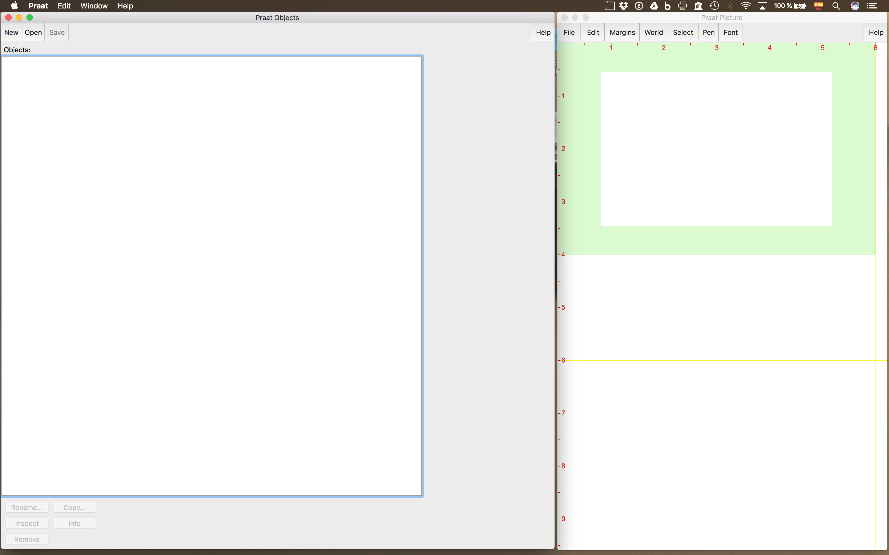
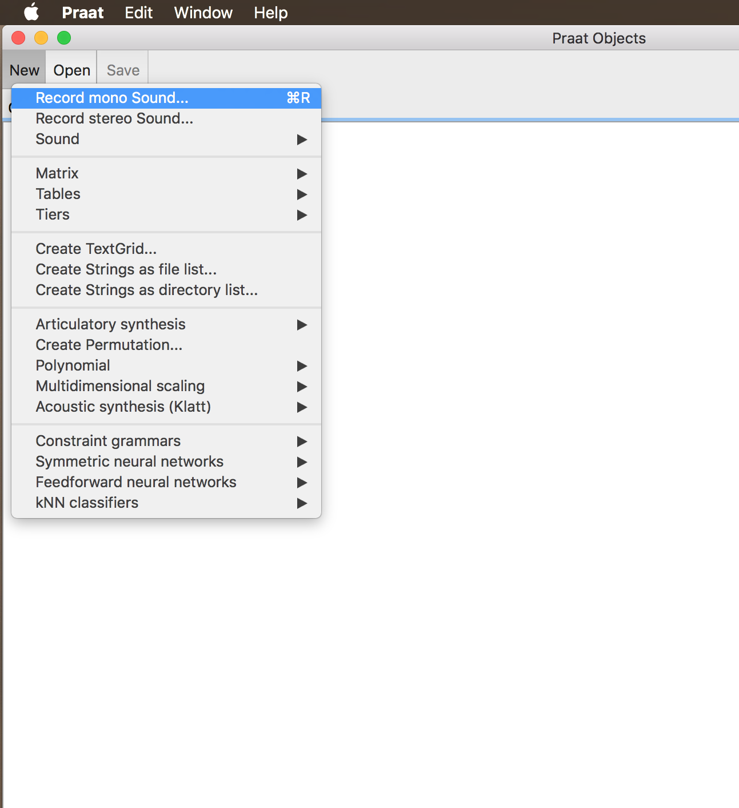
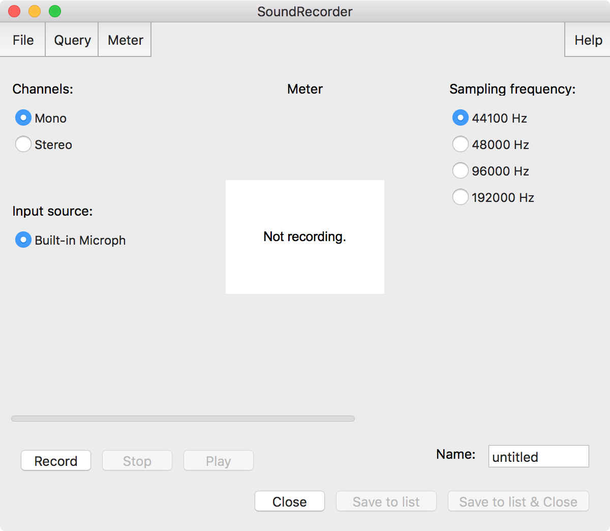
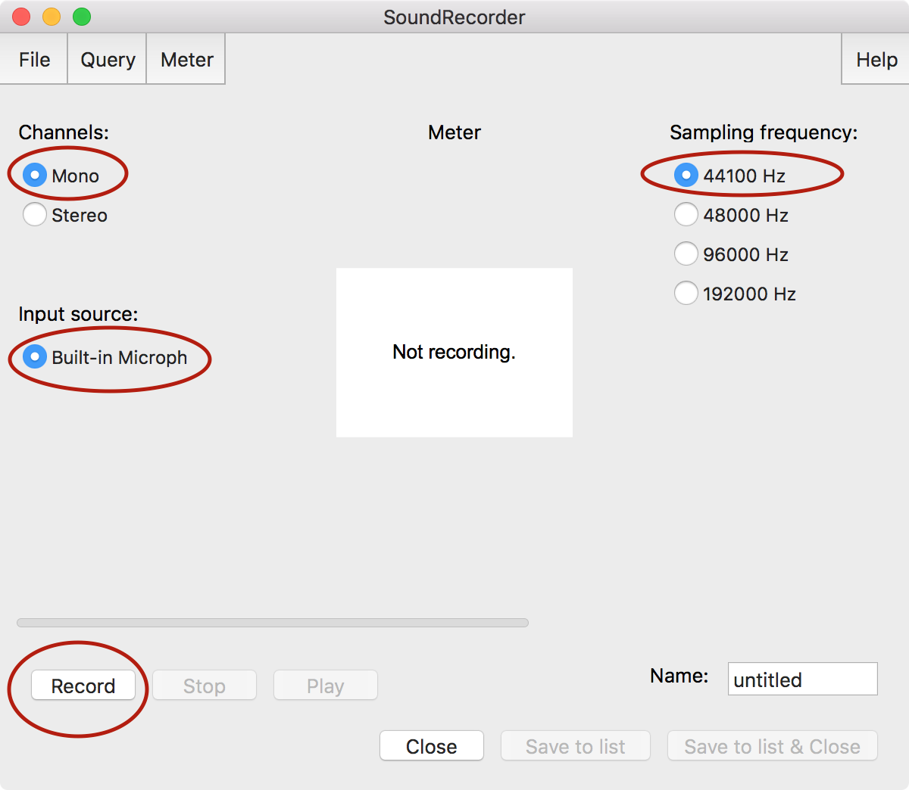
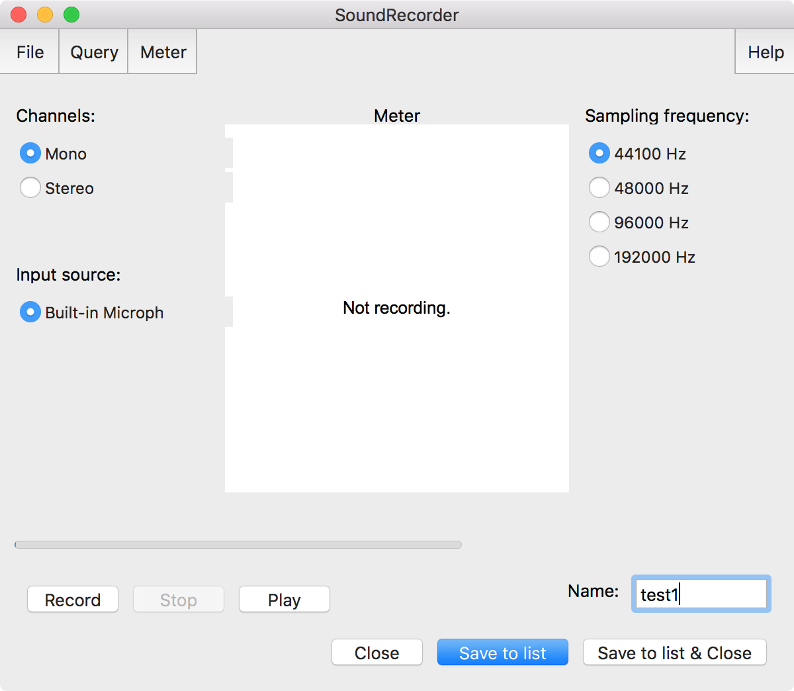
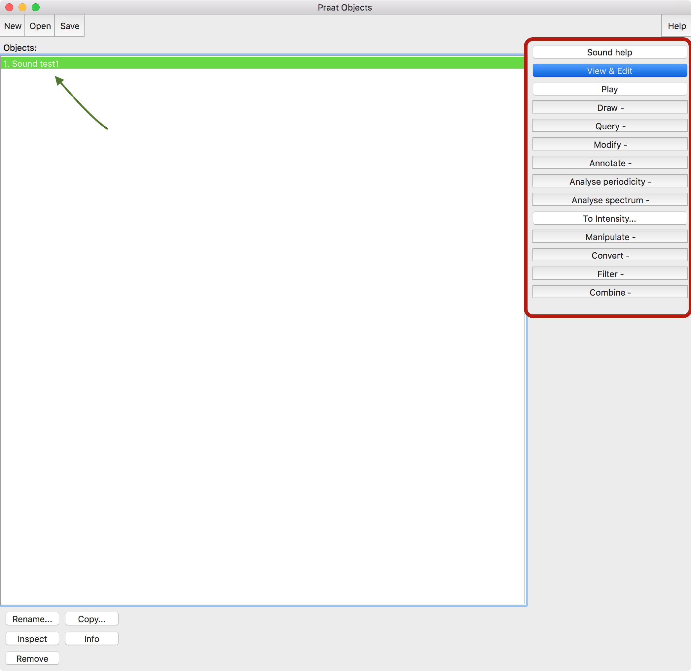
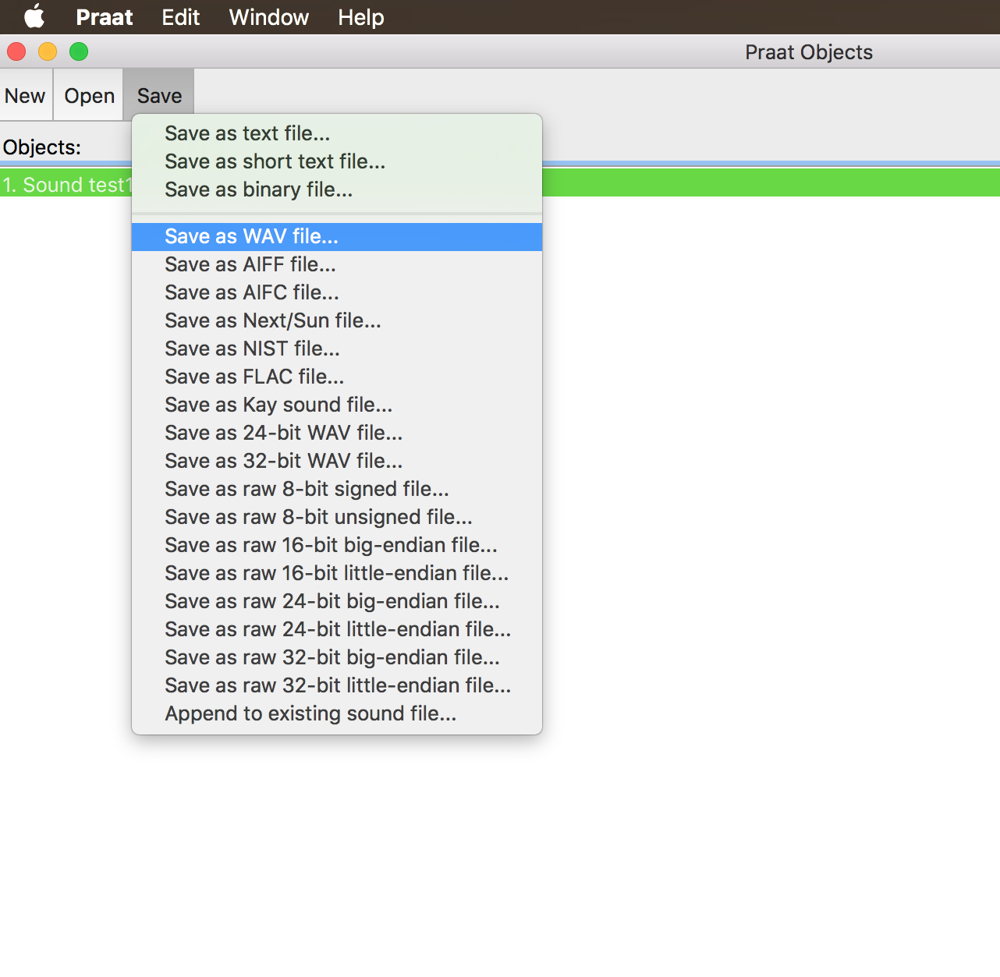

Working in Praat
Recording, opening and saving sound files
Joseph V. Casillas, PhD
Rutgers University | Last updated:
Información básica

- This is the
- First slide
Open Praat

Record a sound object

Record a sound object

Record a sound object

Record a sound object

Record a sound object

View a sound object

Save a sound object
